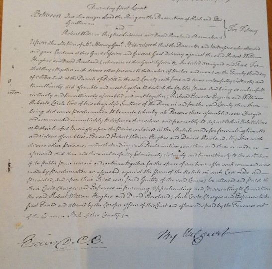
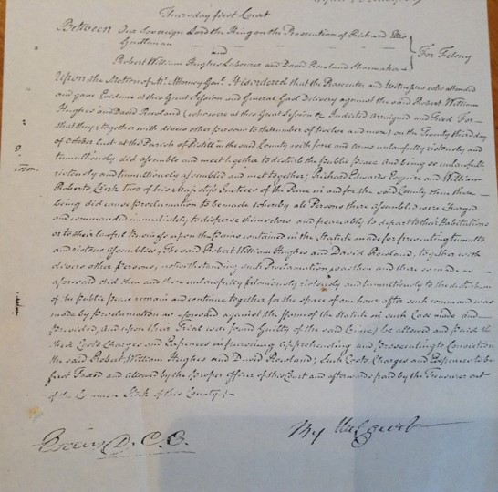
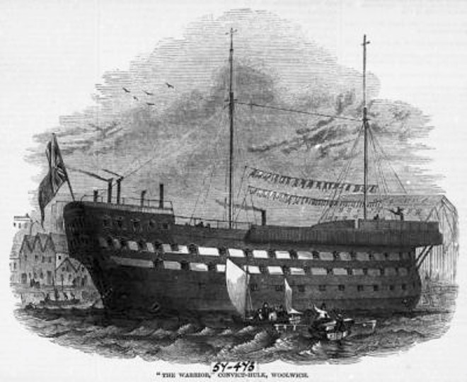

Cae'r Mynydd
 

Les intendants des grands propriétaires fonciers et des géomètres sont venus à Llithfaen comme dans beaucoup d'autres régions montagneuses pour arpenter les terres communes à la suite des Inclosure Acts, une série de lois interdisant l'accès aux terres précédemment détenues en commun. Selon une vieille coutume, si quelqu'un parvenait à construire une maison en une nuit sur une terre commune et au petit matin la cheminée fumait par un trou de la toiture, la maison devenait sa propriété. Des maisons de ce type étaient nombreuses à la montagne où les gens faisaient pacager leurs bêtes, ramassaient du bois de chauffage, et gardaient quelques oies, un cochon, une chèvre, une vache et quelques poulets. Cae'r Mynydd était une de ces maisons.
À l'époque Llithfaen était un endroit très pauvre et selon Eben Fardd «l'ancien hameau de Llithfaen se composait d'une douzaine de maisons au toit de chaume, dont la plupart tombaient en ruines. Une grande maison construite par un certain Jones était dans un état délabré. La route au-delà de Llithfaen était peu intéressante, traversant un terrain rocheux, couvert de bruyère jusqu'à une forge solitaire où on tourne vers Pistyll». Les femmes et les enfants ramassaient la bruyère et en portaient vers les villes pour la vendre comme combustible. La tourbe exploitée en commun servait à alimenter des fours pour cuire du pain.
Robert William Hughes, Cae'r Mynydd soufflait dans une conque pour alerter les habitants de Llithfaen de l'arrivée des fonctionnaires et des géomètres en 1812. Environ quatre-vingt des habitants se sont rassemblés et ils ont fait pleuvoir des salves de pierre sur eux. Bientôt les dragons, vêtus de leurs manteaux rouges, sont venus lire le Riot Act à Llithfaen et, selon la tradition populaire, Robert Hughes, l'homme de la coquille, a été pris caché dans une claie à pain.
Il est condamné au tribunal de Caernarfon à être pendu, mais grâce à l'intervention d'un gentilhomme de Llŷn, sa peine est commuée en transportation à la colonie pénitentiaire de Botany Bay, en Australie. Au bout d'un voyage ardu (34 des condamnés à bord le navire moururent en route) Robert Hughes, vieux et faible, est arrivé à Sydney en février 1814, d'où il est transporté à l'hôpital de Booty  Hill à Port Macquarie. Il a été enterré près de vingt ans plus tard dans l'église de Port Macquarie à l'âge de 70 ans.
Hill à Port Macquarie. Il a été enterré près de vingt ans plus tard dans l'église de Port Macquarie à l'âge de 70 ans.